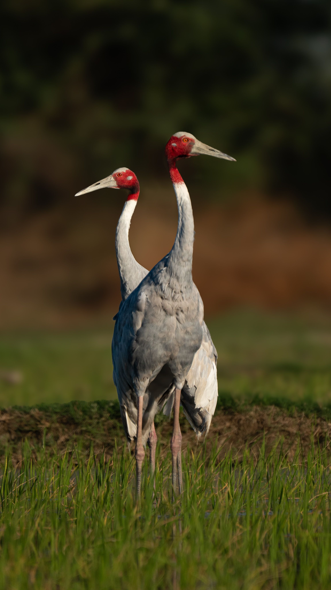

The Sarus Crane is a magnificent tall crane distinguished by its grey body, long pinkish legs and bare red head and upper neck. It is the world's tallest flying bird and is strongly associated with wetlands, flooded fields and open agricultural landscapes. Pairs are famous for their loud calls and coordinated courtship displays.
Sarus Crane is best separated from Brolga by looking at the overall shape and the strongest plumage pattern rather than one small mark. Compared with Brolga, it has a different combination of colour, proportions and typical behaviour, which becomes clearer when the whole bird is visible. Common Crane can also resemble it in some settings, but differences in bill shape, tail length, wing pattern, posture or habitat can help narrow the identification. Calls and behaviour are useful supporting clues when plumage is difficult to see, especially for birds that spend much of their time in dense vegetation. Using several features together is more reliable than identifying the bird from a single characteristic.
BirdLife International — species factsheet and distribution, Cornell Lab of Ornithology — eBird species accounts and identification, Bombay Natural History Society — Indian bird research and conservation, IUCN Red List of Threatened Species — conservation status